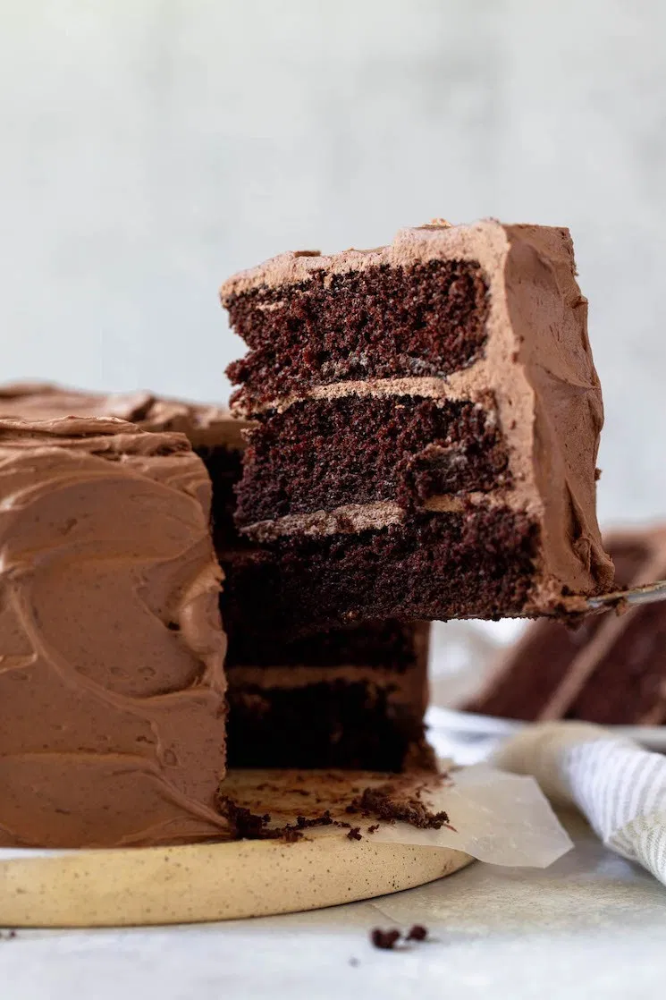

3 Layer Chocolate Cake

If you’ve ever felt intimidated when it comes to making cakes from scratch I promise that it’s not too hard. Sure
it takes a little extra time, but the feeling of baking something completely from scratch is completely worth
it.
Ingredients
Cake:
- 2 cups (250 grams) all-purpose flour, spooned & leveled
- 3/4 cup (65 grams) unsweetened cocoa powder
- 1 and 1/2 teaspoons baking soda
- 1 and 1/2 teaspoons baking powder
- 1 teaspoon salt
- 1 cup (200 grams) granulated sugar
- 1 cup (200 grams) brown sugar
- 1/2 cup (120ml) canola or vegetable oil
- 1 cup (240 ml) buttermilk
- 2 large eggs
- 2 teaspoons pure vanilla extract
- 1 cup (240 ml) boiling water
- 1 teaspoon instant espresso powder optional, but recommended
Frosting:
- 2 cups (460 grams) unsalted butter, softened to room temperature
- 6 cups (720 grams) powdered sugar
- 1 cup (90 grams) unsweetened cocoa powder, sifted
- 6-7 tablespoons (90-105 ml) heavy whipping cream
- 2 teaspoons vanilla extract
- 1/4 teaspoon salt
Steps
Cake:
- Preheat oven to 350°F (177°C). Spray three 8-inch cake pans with nonstick cooking spray and line the
bottom
of each pan with parchment paper. Set aside.
- In a large mixing bowl, sift together the flour, cocoa powder, baking powder, baking soda, and salt.
Whisk
in the granulated sugar and brown sugar until well combined. Then, add the oil, buttermilk, eggs, and
vanilla extract and mix until just combined.
- Add the instant espresso powder to the cup of boiling water and mix until fully dissolved. Add to the
mixing
bowl and mix until everything is just combined. The batter will be thin.
- Evenly distribute the batter between all three cake pans. Bake at 350°F (177°C) for 28-30 minutes or
until a
toothpick inserted into the center of the cakes comes out clean and the tops spring back when lightly
touched.
- Remove from the oven and transfer to a wire rack to cool completely.
Frosting:
- In the bowl of a stand mixer fitted with the paddle attachment, or in a large mixing bowl using an
electric
mixer, beat the butter on medium speed for 1-2 minutes or until smooth
- Add the powdered sugar one cup at a time, making sure to mix well after each addition. Scrape down the
sides
of the bowl, then add the cocoa powder and mix until fully combined.
- Add the heavy whipping cream, vanilla extract, and salt and mix on medium speed until fully combined,
making
sure to scrape down the sides of the bowl as needed.
Assemble the Cake
- Level the tops of each cake with a knife or cake leveler. Place one of the cakes on a cake stand, top
with a
layer of frosting, and smooth it out into one even layer. Repeat with the second layer of cake. Place
the
third layer of cake on top and use the remaining frosting to frost the top and sides of the cake.